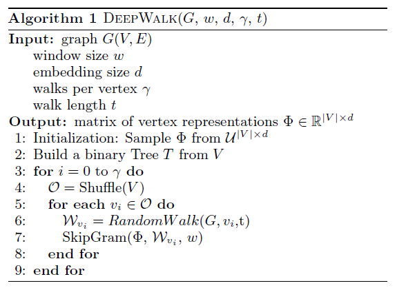
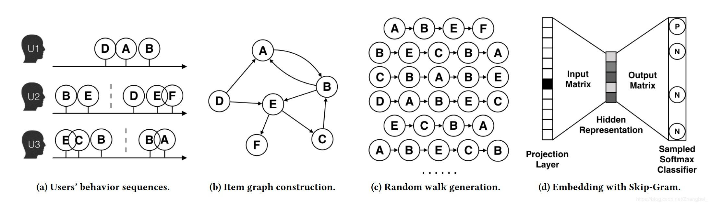
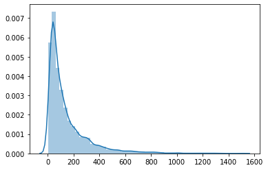
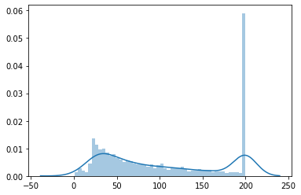
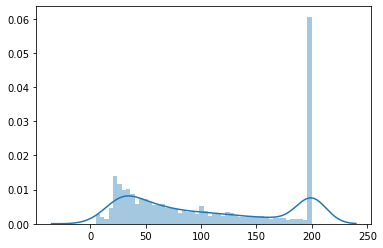

今天来介绍一种比较重要和实用的图算法, DeepWalk.
一看这名称中带有deep, 那么八九不离十和深度学习会有关, 是的, DeepWalk可以看做是深度学习算法在图算法领域的延伸. 下面就来介绍DeepWalk算法的原理, 以及代码实现.
前言
在前面介绍图相关的文章中, 有一些方法, 可以衡量节点的重要性(如PageRank), 还有一些方法可以衡量两两节点之间的相似性. 这些方法得到的结果, 在一些特定的领域, 是有效果的, 但是并不具备泛用性, 这里泛用性的意思是, 能否像NLP中的词向量一样, 也用一些Embedding来表示图中的每个节点, 然后利用这个Embedding, 可以用来做各种下游任务呢? 可以的, 这就是图表示学习.
原理
众所周知, word2vec是一种经典且好用的Embedding方法, 可以用在NLP中的单词上. 也可以用在其它一些数据呈现离散序列的场景, 比如item2vec方法, 我的这篇文章中有介绍.
那么, 如果把word2vec也应用在图中, 来使得图中的每个节点学习到对应的Embedding, 好像是一个不错的点子. 而word2vec的输入, 是离散的序列, 所以现在问题就变成了, 如何在一个图中, 产生出一些可供word2vec学习的序列.
此时, 随机游走第一个站了出来: 没错, 正是在下! ♪(^∇^*)
所谓随机游走, 通俗地来说, 就是在当前的一个节点上, 没次随机选择一个相邻的节点, 进行移动. 具体说来, 在一个图中, 可以先随机地选取一个节点, 作为初始节点, 然后进行随机游走, 得到一个路径, 当走到设定的最大步数时停止, 而这个路径就是可以用word2vec来学习的序列.
DeepWalk具体的算法流程为:

其中的$\gamma$表示整体的过程重复次数, 类似于训练神经网络时的epoch参数. 每次对所有节点形成的列表进行乱序, 然后依次选取节点作为初始节点, 开始随机行走, 得到训练用的序列数据.
DeepWalk简单来说, 等价于随机游走, 加word2vec, 随机游走从图中抽取序列, word2vec再从序列中学习Embedding. 假设相连的节点之间, 存在着更高的相似性, 而这种共现关系, 就可以体现在学习到的Embedding上.
是不是非常简单呢, 如果明白了word2vec的原理, 那么确实挺简单的. 但是我觉得其实还有一些值得注意或者讨论的地方.
序列-图-序列
首先, 如果的数据, 本身就呈现一个图的形式, 比如社交网络, 那么就可以直接使用DeepWalk来进行图表示学习, 这是很自然的. 但如果初始数据不是天然的图, 还能够使用DeepWalk来进行学习吗?
在问这个问题之前, 其实应该问一下, 都不是图结构的数据了, 硬要用图算法来做, 图个啥? 炫技吗♪(^∇^*) 当然不是, 这里举个栗子, 在item2vec那篇文章中, 是将用户的行为序列, 当成word2vec直接的输入, 通过序列中物品的共现关系, 来学习对应向量, 最后用向量来做召回. 然鹅这里有个小问题, 即每一个序列, 都是仅仅局限于一个用户得到的, 这可能会带来一些局限性.
考虑一个场景, 比如两个人要去菜市场买菜做饭, 就做…番茄炒鸡蛋吧, 那么原材料肯定是需要番茄和鸡蛋了, 假设这时候番茄分为国产番茄和进口番茄, 这时候一个人就习惯买鸡蛋加国产番茄, 另外一个人就喜欢买鸡蛋加进口番茄. 即形成了(鸡蛋, 国产番茄)和(鸡蛋, 进口番茄)两个序列, 我们知道同属番茄, 它们的Embedding应该非常相似, 如果这时候将他们的行为序列使用item2vec来计算, 那么由于属于两个不同的序列, 最终结果理论上仍然具有一定的相似度, 毕竟已知A与B相似, B与C相似, 可得A与C也可能相似, 但是相似度可能不够高.
而如果采用了图表示学习会怎么样呢? 那就先想办法把原本的序列变成图, 再使用DeepWalk来学习. 还是上面那个栗子, 把原本的(鸡蛋, 国产番茄)和(鸡蛋, 进口番茄)两个序列转变成图, 序列中相邻的两个物品, 在图中对应节点上有连边, 那么在图中, 国产番茄和进口番茄, 就通过鸡蛋这个节点得到了连接, 而在使用随机游走后, 它们就可以同属一个序列中且距离较近, 就可以获得更加相似的Embedding向量.

如上图, 将原本的序列转变为图, 再从图中抽取出新的序列, 来使用word2vec进行学习, 可以在原本序列呈现的共现关系之上, 挖掘出更深层次的共现关系, 这通常是更有益的.
这里还有一个小问题, 由于从序列到图再到序列, 可以获取到更多的共现关系, 那么如果原始序列比较长, 同时一条序列中如果有大部分物品, 那么在形成图以后, 可能这个图会接近一个完全图(两两节点之间都存在连接). 这时候进行图表示学习, 得到的结果可能不尽人意. 如何处理这个问题呢? 我个人认为在原始序列那里, 就要将序列的切分做好, 即通过一些规则, 将原本相关的一些物品/行为, 划到一个子序列中, 这样相当于会使得基于原始序列构建的图中的连边被切断一些, 最终学习效果会更好.
完全随机/带权重
原本的DeepWalk, 节点之间的连边是不带权重的, 即只要与当前节点相连的节点, 都有相同的概率成为下一个节点.
但是在一些情况下, 带权重的可能会更好一些. 比如现在这个图是有一些原始序列得到的, 那么可能在原始序列中, 节点A经常与节点B出现在一起, 和其它一些节点可能只是一起出现一次, 这说明节点A与节点B是有很大关联的. 而如果在图中使用完全随机的方法, 可能就会削弱这种关联性, 使得节点B对于A来说和其它节点没有明显区别.
而在对连边加入权重后, 可以对类似这种情况进行调整. 比如让连边的值等于两个节点在原始序列中, 相邻出现的次数, 在形成图以后, 对于每个节点而言, 对其相邻节点的连边权重做归一化, 归一化后的值可以看做跳转概率.
当然这只是简单的一种加权重的方法, 真正是否加权重, 怎么样加权重, 需要由具体的数据与任务(下游任务)来决定.
无向/有向
图属于无向图还是有向图, 或者说在构造图的时候, 选择构造成怎样的图, 对使用DeepWalk这样的图表示学习算法, 也是有一定的影响的.
个人认为, 构造为有向或者无向, 可以根据业务以及数据本身的性质来决定. 比如社交网络中, 以好友关系来构建, 无向网络会自然一些, 比较朋友是相互的; 而已关注来构建, 那么有向网络可能会好一些, 因为关注有时候是单方面的.
此外, 如果把关注点放在图表示学习后的一些下游任务上, 那么可以对无向/有向这两种形式的图都进行尝试, 比较它们的差别, 选择其中一种.
代码
这里对比item2vec那里, 仍然使用了相同的MovieLens 1M Dataset.
在构建图的时候, 使用了最简单的无向, 完全随机(不带权重)的方式.
在图上进行随机游走, 抽取序列时, 为了使与原始序列在数据量上尽量相等, 即总序列长度(各序列长度之和)相当, 设置的$\gamma$为2, 序列最大长度为100.
数据准备
1 | # 读取数据 |
| user_id | item_id | score | time | |
|---|---|---|---|---|
| 0 | 1 | 1193 | 5 | 978300760 |
| 1 | 1 | 661 | 3 | 978302109 |
| 2 | 1 | 914 | 3 | 978301968 |
| 3 | 1 | 3408 | 4 | 978300275 |
| 4 | 1 | 2355 | 5 | 978824291 |
1 | # 按时间分为训练集和测试集 |
1 | # 整合每个用户的观看序列 |
1 | [('85', '974691498'), |
1 | # 序列长度分布 |

1 | # 对长于200的序列进行截断 |

1 | # 对小于5的序列进行剔除 |

1 | # 将测试集中新出现的用户与电影过滤掉 |
1 | (129815, 4) |
1 | # 训练数据序列 |
1 | # 构建图 |
1 | # 进行随机游走构建序列 |
模型训练
这里使用gensim中的word2vec来进行计算, 简单方便~
1 | # 训练模型 |
1 | # 获取词表, 以及每个词汇的词向量 |
1 | 词表大小为3154 |
1 | # 对每个用户统计已经看过的电影 |
1 | # 统计测试集上每个用户点击的物品 |
1 | # 将用户近期观看的100部影片的Embedding进行平均池化 |
1 | # 为每个用户寻找感兴趣的200电影(去除已观看) |
1 | # 计算查准率, 查全率, F1 |
1 | Precision: 0.1463, Recall: 0.2488, F1: 0.1843 |
小结
以上, 通过对DeepWalk原理的介绍, 知道了这是一种相对简单而有效的图表示学习方法, 即可以将图中的节点, 利用其共现关系, 学习得到Embedding.
然后用代码来对算法流程进行实现, 并在相近的参数下, 对比item2vec在召回中的效果:
| item2vec | DeepWalk | |
|---|---|---|
| Precision | 0.1213 | 0.1463 |
| Recall | 0.2064 | 0.2488 |
| F1 | 0.1528 | 0.1843 |
从结果上对比, DeepWalk是要比item2vec效果更好的, 这表明在使用图表示学习后, 确实挖掘出了更多潜藏的共现关系.
同时, 对于item2vec来说, 其主要能够调节的超参数有:
原始序列的长度.
可以对一些较短的序列进行过滤, 对一些较长的序列进行截断或者分成多个序列.
word2vec算法.
包括Embedding向量的维度, 邻近词的窗口大小, 负采样数量等.
用户Embedding的表示.
如何利用物品的Embedding来表示用户的Embedding. 可以取近期点击物品的Embedding平均, 或者加权平均等.
而对于DeepWalk来, 在item2vec的基础上, 增加了更多可调节超参数:
用于构建图的样本.
包括原始序列的长度以及数量, 构建出来的图的不同, 会影响到采样的序列及后续的训练.
图中序列的采样.
采样多少样本序列, 每个序列长度为多少, 也是需要调节的.
综上, DeepWalk是一种值得使用的算法, 同时在使用时, 需要根据一些下游任务, 来对其超参数进行调节, 以达到更好的效果.